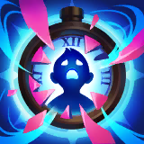

Hero kit
Tempus — All Four Skills Explained
Chronostasis stops the enemy team, Withering weakens their attackers, Temporal Anomaly traps their most dangerous physical hero, and Time Paradox bends the pace of the battle in his team's favour.

SKILL 1 · ULTIMATE
Chronostasis
Tempus stops time for all enemy heroes for two and a half seconds.
During this period enemies cannot move, use skills or dodge attacks. Their Armor and Magic Defense are reduced, and their skill cooldowns are frozen.
Chronostasis also extends the duration of all curses and debuffs affecting enemies.
Core mechanic: 2.5s team-wide time stop + defense reduction + debuff extension
Two and a half seconds might sound insignificant, but think about what happens during that time. Dodge-based teams temporarily lose their ability to avoid attacks, creating openings for damage dealers like Xe'Sha and Cascade. Enemy abilities are delayed, disrupting their timing and potentially preventing important defensive reactions.
Strategic advantage: The Armor and Magic Defense reductions count as separate debuffs, so Iris can benefit enormously. Add the extension of existing negative effects, and Chronostasis becomes one of Tempus's most valuable tools.
Tempus weakens distant enemies in front of him for six seconds, reducing their Physical Attack and maximum Health.
This ability is particularly troublesome for physical damage dealers. Lower Physical Attack directly weakens their offensive pressure, while lower maximum Health interferes with heroes who rely on large Health pools. Kayla is one example worth considering.
Core mechanic: 6s Physical Attack + maximum Health reduction
Strategic advantage: Because Withering applies negative effects, it also creates opportunities for teammates who benefit from debuffs.
Tempus targets the enemy hero with the highest Armor Penetration, trapping them in a Temporal Anomaly for five seconds.
During this period the target is slowed by 25%, loses 50 Energy and takes Magic Damage every second.
Core mechanic: 5s trap · 25% slow · −50 Energy · Magic Damage every second
Strategic advantage: Especially useful against physical attackers who rely on Armor Penetration. Tempus doesn't simply damage them, he reduces their speed and Energy. When that target is an important damage dealer, those five seconds can make a real difference.
Tempus summons a massive Clock in the center of the battlefield for four seconds.
Enemies within its range are slowed, while allies receive a 10% speed increase. Affected allies also gain additional maximum Health.
Core mechanic: Enemy slow + 10% allied speed + allied maximum Health
This is where Tempus becomes more than a control specialist: he's manipulating both sides of the battlefield simultaneously. Enemies become slower while allies become faster and harder to eliminate.
Strategic advantage: The maximum Health increase can create interesting interactions with heroes like Aidan, Astaroth and Xe'Sha. Combined with Chronostasis, Time Paradox lets Tempus set the pace of an entire battle.